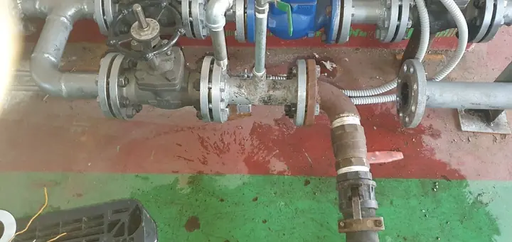
현장에서 직접 한 일
블로그에 올린 작업 기록을 정리했습니다. 사진은 모두 중앙설비산업 블로그에서 가져왔습니다.
사례 1 · 9월 중순
신설 산업용 보일러 소다 보일링
소다 보일링(알칼리 보일링)은 보일러를 새로 설치한 뒤, 또는 기존 보일러의 연관·수관을 크게 교체한 뒤 튜브와 상·하부 드럼에 남은 기름 성분(유지), 분진, 미세 분진을 없애려고 하는 작업입니다.
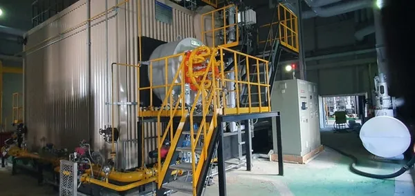
약품이 도는 길
하부 드럼 배출밸브에 플랜지 설치
하부 드럼에 연결된 배출밸브(Blowdown Valve)에 약품 순환용 플랜지를 답니다.
상부 드럼 분출밸브에 플랜지 설치
상부 드럼의 분출밸브(Surface Blowdown Valve)에도 약품 순환용 플랜지를 답니다.
수주통 연락관 밸브 차단
안전밸브, 수주통, 수위 조절기처럼 예민한 부품에 약품이 닿지 않도록 연락관 밸브를 잠급니다.
펌프 설치와 순환 테스트
펌프를 설치하고 데운 온수로 순환 테스트를 해 이상이 없는지 먼저 확인합니다.
작업 순서
준비
하부 드럼 배출밸브에 플랜지 설치
하부 드럼에 연결된 배출밸브(Blowdown Valve)에 약품 순환용 플랜지를 답니다.
상부 드럼 분출밸브에 플랜지 설치
상부 드럼의 분출밸브(Surface Blowdown Valve)에도 약품 순환용 플랜지를 답니다.
수주통 연락관 밸브 차단
안전밸브, 수주통, 수위 조절기처럼 예민한 부품에 약품이 닿지 않도록 연락관 밸브를 잠급니다.
펌프 설치와 순환 테스트
펌프를 설치하고 데운 온수로 순환 테스트를 해 이상이 없는지 먼저 확인합니다.
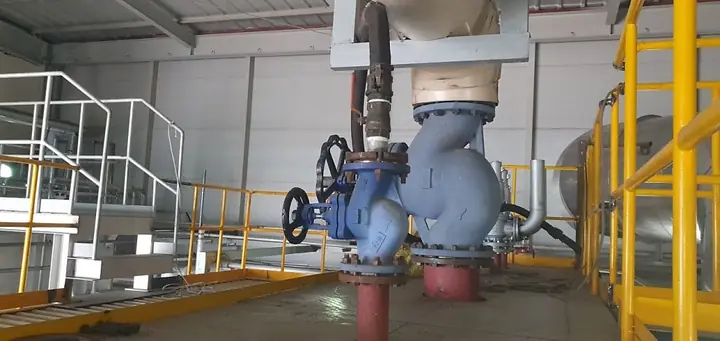
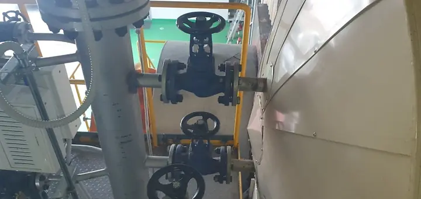
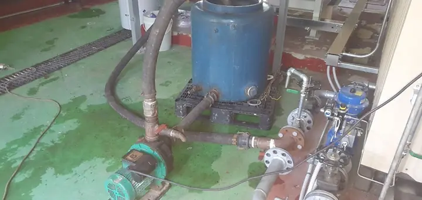
약품 순환
약품 투입
강알칼리 약품을 넣습니다. 위험한 약품이라 작업 전 안전교육을 하고, 안전장구와 안전복장을 반드시 갖춥니다.
폐액 반출
쓴 약품은 폐수 수거 차량으로 반출합니다.
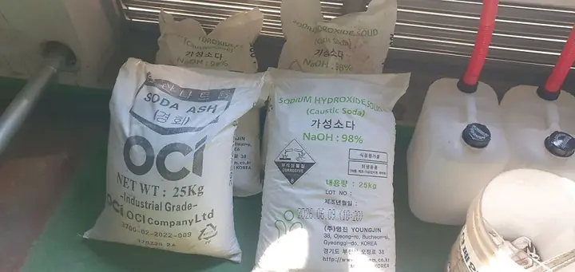
세척과 확인
상부 드럼 내부 확인
약품 순환 뒤 상부 드럼 안을 보면 떨어져 나온 기름 성분, 분진, 스케일이 보입니다.
고압세척
고압세척으로 상부 드럼, 하부 드럼, 하부 드럼 바닥의 불순물을 걷어 냅니다.
마무리 확인
드럼 안쪽과 바닥까지 깨끗해졌는지 확인하고 작업을 마칩니다.
세척 전과 후
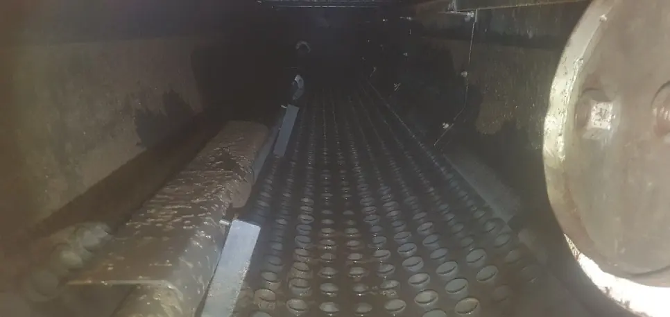
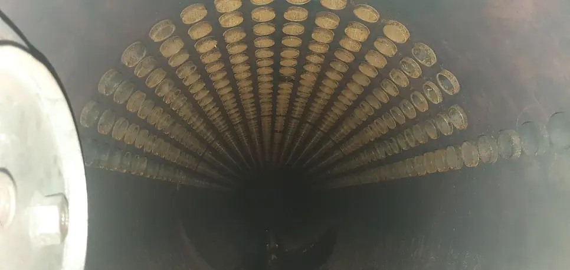
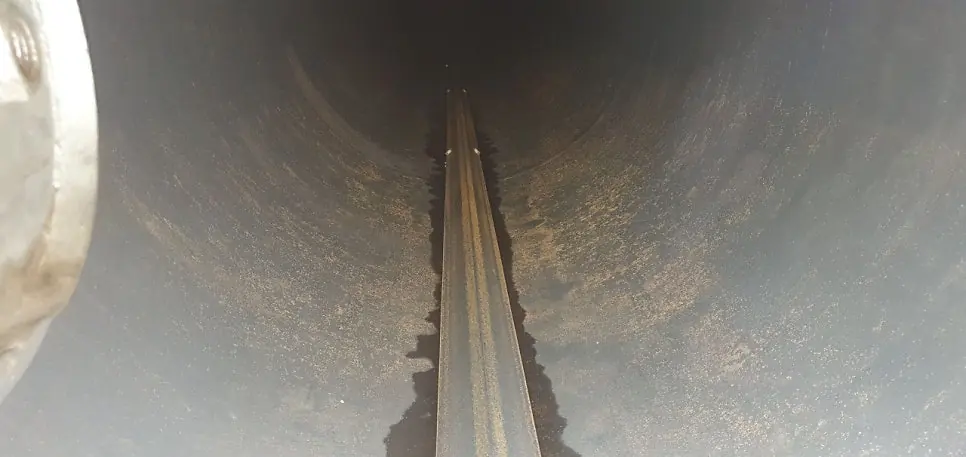
세척 전 사진은 상부 드럼, 세척 후 사진은 드럼 내부와 하부 드럼 바닥입니다. 같은 자리를 찍은 사진은 아닙니다.
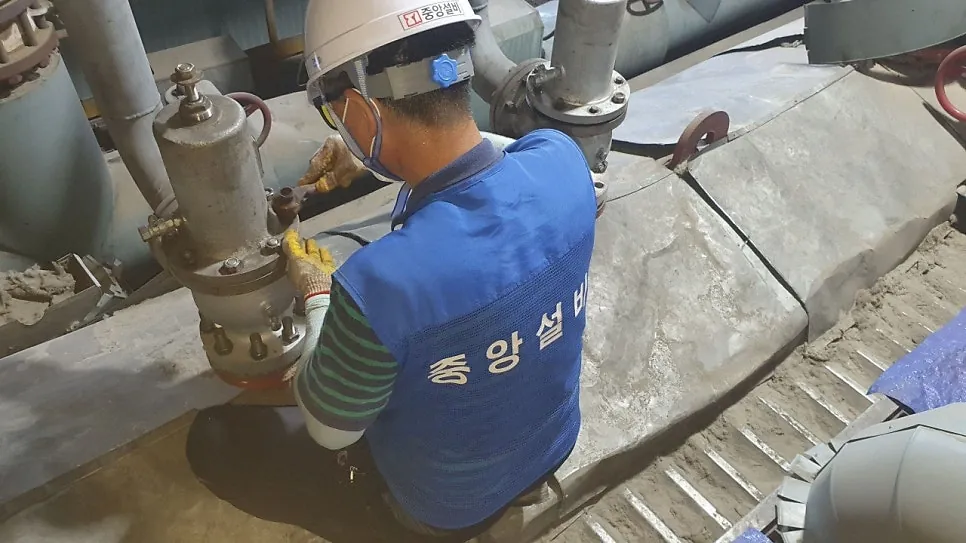
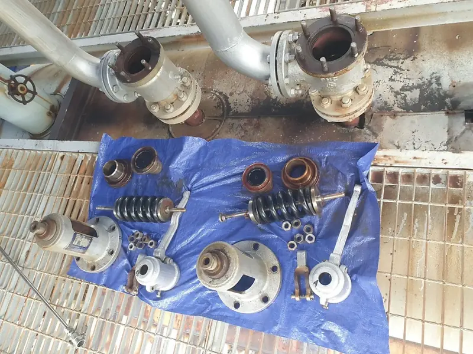
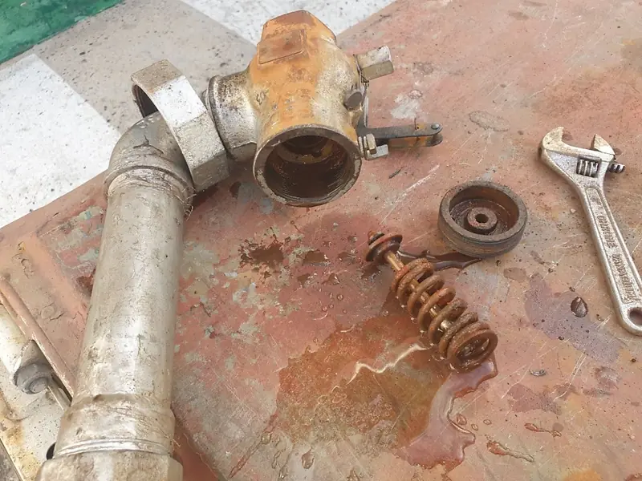
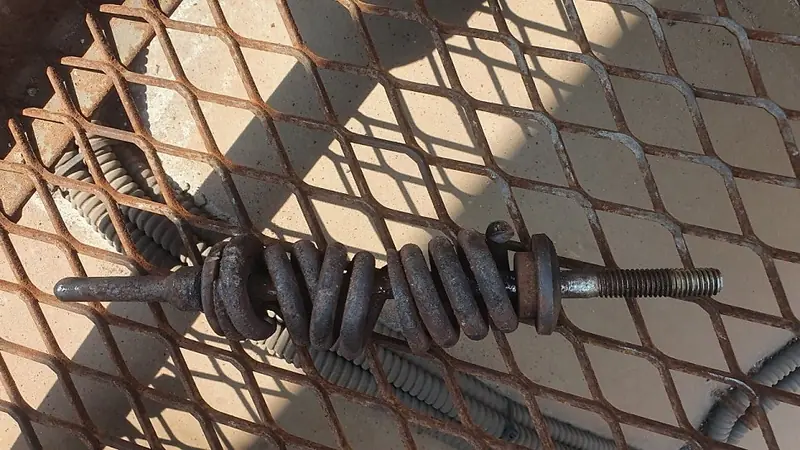
이 작업에서 배운 것
안전밸브는 고쳐 써도 되나요?
안전밸브는 소모품입니다. 작동이 불량하다고 고쳐 쓰기보다 3~5년 주기로 교체하는 것이 정석입니다. 안전밸브가 제때 작동하지 않으면 큰 사고로 이어질 수 있습니다.
안전밸브 안에 왜 물이 고이나요?
배출관 끝으로 빗물이 들어오거나, 안전밸브에서 증기가 새는 경우입니다. 고인 물은 스프링을 부식시키고, 심하면 스프링이 부러집니다.
물이 고이지 않게 하려면요?
안전밸브 몸체에는 15mm 크기의 배출구가 있습니다. 막혀 있다면 이곳에 SUS 파이프나 주름관으로, 밸브 없이 물 빠짐 배관을 설치하세요.
법정검사 때 안전밸브는 어떻게 하나요?
계속사용안전검사를 받기 전에 안전밸브를 분해해 정비합니다. 상태가 나쁘면 교체를 권합니다.
작업은 이렇게 진행합니다
- 1단계
상담
설비 종류와 용량, 증상, 원하는 일정(정기 보수 기간 등)을 듣습니다.
- 2단계
현장 확인
필요하면 현장을 보고 작업 범위와 방법, 일정을 정합니다.
- 3단계
안전 준비
작업자 안전교육과 장구를 갖추고, 예민한 부품은 미리 보호합니다.
- 4단계
작업
세관, 청소, 수리, 검사 준비를 정한 순서대로 진행합니다.
- 5단계
확인과 정리
작업 결과를 함께 확인하고, 폐액 같은 부산물은 정해진 방법으로 반출합니다.
더 받을 사례
사례 사진과 설비, 지역, 작업 내용을 받으면 이 자리에 채웁니다.
-
현장 사진자료를 받으면 채울 자리소각로·폐열보일러사례 제목 · 자료를 받으면 채울 자리현장 자료를 받으면 채울 자리
-
현장 사진자료를 받으면 채울 자리튜브·축로사례 제목 · 자료를 받으면 채울 자리현장 자료를 받으면 채울 자리
-
현장 사진자료를 받으면 채울 자리열병합·선박·탱크사례 제목 · 자료를 받으면 채울 자리현장 자료를 받으면 채울 자리
보일러 세관과 법정검사, 언제든지 연락 주세요
설비 종류와 용량, 원하는 일정을 알려 주시면 작업 범위와 방법을 함께 정하겠습니다.